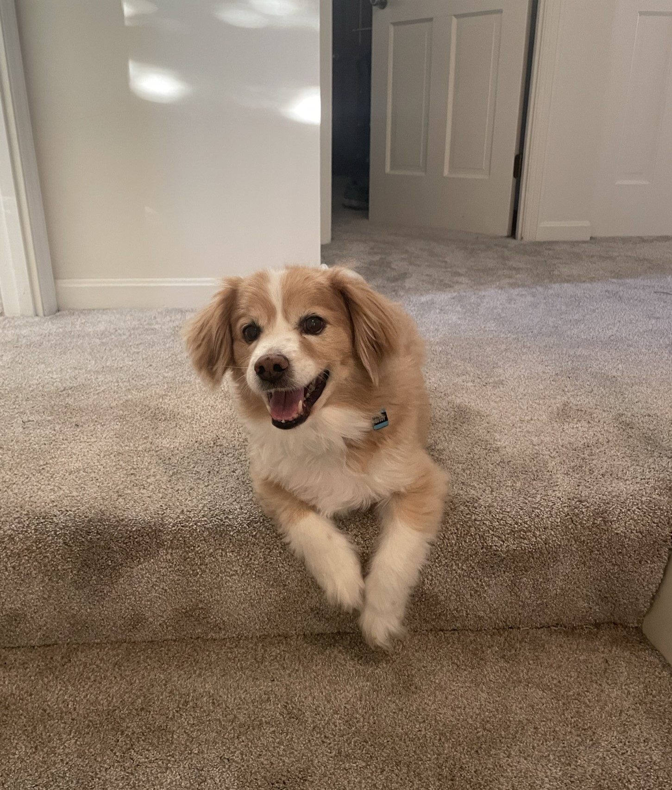

Welcome to My Personal Website!
My name is Ryan Mendoza. I'm 20 years old and live in Cincinnati, Ohio. I'm currently in the process of transferring to University of Cincinnati. I spent the first year and a half of my collegiate experience at Ohio State. I originally planned to major in mechanical engineering at OSU, but then I switched to physics, and now I'm switching to and finally deciding on Electrical Engineering at UC. I'm sort of a novice programmer, so I decided to make this website as a learning opportunity for myself (even though lots of folks would argue that web development isn't "programming" but who cares). Every day, I'm always trying to sharpen my skills and learn as much about the world as I can. In my spare time I enjoy distance running, reading, and playing guitar. I'm currently training for a marathon and trying to start a band. This site is never complete; I'm constantly nitpicking and will continue to update this over time. Here's a picture of my dog as a stand-in for my lack of professional-looking photos of myself.